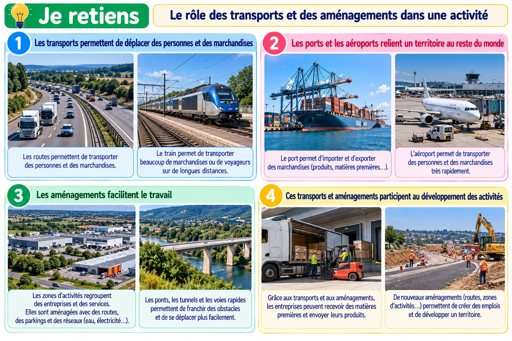

Expliquer le rôle des transports et des aménagements dans une activité
Pour fonctionner, de nombreuses activités ont besoin de déplacer des personnes ou des marchandises.
Expliquer le rôle des transports et des aménagements dans une activité

Planche pédagogique composée d’images photoréalistes illustratives.
Les déplacements nécessaires
Les agriculteurs acheminent leurs récoltes. Les magasins reçoivent leurs produits. Les salariés se rendent sur leur lieu de travail.
Des équipements adaptés
Routes, voies ferrées, gares, ports et entrepôts facilitent les déplacements et le stockage. On appelle aménagements les équipements créés pour répondre à des besoins.
Un territoire transformé
Une nouvelle route ou une zone d’activités peut faciliter le travail, mais aussi modifier le paysage. Il faut donc réfléchir aux besoins des habitants et à l’environnement.
Je retiens
Les transports déplacent personnes et marchandises. Les aménagements facilitent les activités, mais transforment aussi les territoires.